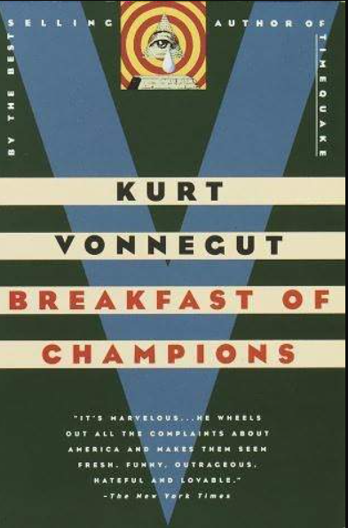

How Kurt Vonnegut sees Free Will
 Written by Connor BlackmerPublished:
Breakfast of Champions, written by Kurt Vonnegut, is about the author struggling to find meaning in the later years of his life. He fought in WW2 as an infantry soldier, and you can find that even his prose has become cynical due to the ordeal. His most notable work, Slaughterhouse Five, has the odd perspective of simply seeing the war and the massive amounts of pain and suffering as something that simply couldn't be stopped. This is shown through the eyes of a fictional race of aliens which can see time all at once, and share their knowledge of time with the protagonist. However, due to the nature of their power they are powerless to change it. Time as they see it is just a play to be enacted, and the protagonist also begins to fall victim to this way of thinking. In the end, it's a comforting but ultimately regressive idea to believe that these atrocities were simply 'part of the play'. Four years later, Kurt Vonnegut wrote 'Breakfast of Champions'. This book acts almost as a counter to his earlier work, and seeks to show that each person does, in fact, have some control over his reality. It takes us through a fictional version of America, which is scarily similar to the one we live in today. It follows characters who have no control over the factors which made them who they are, yet over the course of the book they each come to realize that they do actually have some power in how they want their life to go. Vonnegut also inserts himself as a character in the book, and further emphasizes that he does indeed have control, as he warps and twists the setting to his will, only to set it back again to how he wants it. It's strange, witty, and very eye-opening about not only the nature of free will, but also America and some of it's own problems. I would highly recommend checking out either book mentioned in this article if you ever have the time.
| Book Title | Date Published | Genre(s) |
|---|---|---|
| The Sirens of Titans | 1959 | Dark Comedy, Science Fiction |
| Cat's Cradle | 1963 | Science Fiction, Satirical |
| Slaughterhouse Five | 1969 | Science Fiction, Comedy |
| Breakfast of Champions | 1973 | Satirical, Metafiction, Postmodernist |